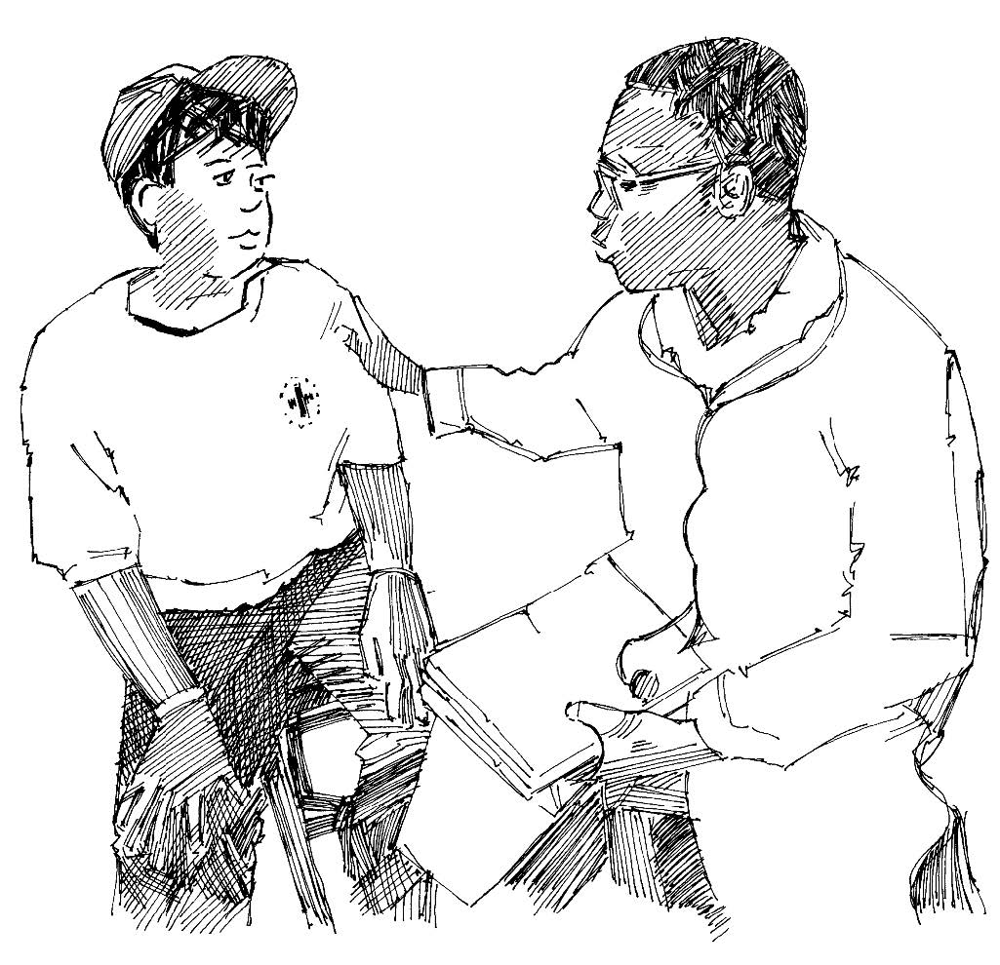

Overview
- During an epidemic, sick people frequently cannot be treated at home or by volunteers or family. They require specialized medical care and need to go for treatment to a health clinic or hospital.
What you need to know
- Find out how you can tell when a person is severely ill and needs to be referred. Familiarize yourself with the symptoms of the disease and your guidelines for action.
- Find out the location of health facilities close to your community, and to which ones you should refer serious cases. Find out the capacity of local health facilities (their expertise, number of beds, etc.), and how to get to them. Do they have ambulances? Can they be reached by public transport?
- Talk to health professionals and agree the best method for sending sick people from the community to the health facilities. If the disease is highly infectious (like Ebola or Marburg ), special transport must be arranged so that other people are not infected.
- When doing disease surveillance, always keep the idea of referral in mind.
What you can do
- Learn the symptoms of the disease that is causing the epidemic and the signs that indicate that patients should be referred to health facilities.
- Visit health facilities and talk to doctors and nurses. Tell them about your activities and how you plan to do referrals. Take advice from them.
- Decide what methods are available for referral. Are there ambulances? Find out how to call them. Is there public transport? Can the National Society provide transport? Do people have money to pay for transport?
- Always carry the relevant disease tool with you when you are doing surveillance to help you remember what you should know about the disease and its symptoms.
- When you refer, always explain clearly to the family concerned what the disease is, what its symptoms are, and why you think referral is necessary. Give them information about the health facilities available and how to reach them by different means of transport.

A volunteer talking to a health professional